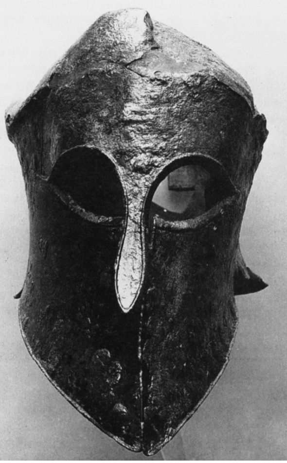

伯里克利在那篇著名的、为悼念公元前431年在与斯巴达人的战斗中倒下的雅典士兵而致的追悼辞中宣称：“我们的城市向全世界开放……雅典是希腊的学校。”这番自我夸耀的话有充足的依据。公元前5世纪，雅典使斯巴达和其他所有的希腊城邦黯然失色。这是伯里克利时期雅典的黄金时代——古典希腊的黄金时代。
雅典当时之所以能居于令人目眩的卓越地位，是因为它在打败庞大的波斯帝国这场重大战争中起了最主要的作用。雅典人在希波战争前不久幸运地发现了劳里昂银矿。他们得到这笔财富后决定建立海军，并建造了200余艘最新式的三层划桨战舰；这支舰队在随后的战争中起了决定性作用。
战争的根源在于，公元前6世纪中期，波斯人征服了小亚细亚的希腊城邦。波斯人暴虐地干涉这些城邦的内部事务，使它们于公元前499年发动了反对波斯的起义。它们向希腊本土的城邦求援，并得到了积极的响应；这在一定程度上是因为那时波斯帝国正扩展到欧洲东南部，从北面威胁希腊。小亚细亚诸城邦尽管得到来自爱琴海对岸的海军的援助，但到公元前494年，还是被波斯帝国制服了。接着，波斯皇帝大流士决定对希腊本土顽固抵抗的希腊人进行惩罚，他派出一支远征军，于公元前490年在雅典西北面的马拉松登陆。虽然雅典人由于诸城邦之间的敌对，几乎是独自作战，但他们的方阵还是予侵略者以沉重打击，大大提高了希腊人的士气。历史学家希罗多德写道：“在希腊人中，看到波斯服装、看到穿波斯服装的人而敢于直面，这些人当属最早；在那时以前，单是波斯人的名字就足以让希腊人闻风丧胆。”

图37 米太亚德献给宙斯的青铜头盔，用来纪念公元前490年雅典人对波斯人的胜利。
十年后，波斯人又卷土重来，集结的武力比十年前要强大得多，这一次是取道穿越色雷斯和色萨利的陆路。一支由斯巴达人统率的混合部队为阻击波斯人，在温泉关英勇地力战至最后一人。虽然波斯人攻入并洗劫了雅典，但雅典海军在附近的萨拉米斯湾击溃了他们；当波斯人从爱琴海撤退时，希腊联合舰队尾随其后，赢得又一次海战的胜利。不久，小亚细亚的希腊城邦陆续摆脱波斯人的统治，希腊人成为统治中东的庞大帝国的战胜者。
希腊人的胜利有着重大影响。首先，使希腊人免遭东方专制主义的统治，得以保持自己的特点，为人类文明做出其独特的贡献。希腊人的胜利，特别是雅典海军的胜利，也促进了民主政治的发展。因为划船投入战斗的划手都是无财力将自己装备成重甲步兵的公民，所以，城市贫民这时在军事上所起的作用甚至比有财产的重甲步兵还要重大。这自然加强了民主政治运动的发展。民主政治在伯里克利时期（公元前461——前429年）达到最高潮。
伯里克利虽然出身贵族，但却是一个热心诚挚的民主主义者；他将权力转移到由全体男性公民组成的公民大会手中。公民大会是处理雅典事务的最高权力机构。它一年召开40次例会，如果需要的话，还召开临时会议；不仅解决一般政策问题，而且还为政府在外交、军事和财政等一切领域的活动做出详细决定。伯里克利还规定大部分公职实行薪给制，使贫民有可能担任公职。另外，他还建立许多由陪审团作最后决定的民众法庭，陪审员由抽签产生，所有公民都可担任。因而，伯里克利完全有理由在他的演说中自豪地宣称：“雅典是希腊的学校。”
雅典在希波战争中所起的重大作用导致其最终建立起雅典霸权，而斯巴达由于其固定不变的经济和经常受到希洛人起义的威胁，仍处于停滞不前的状态。雅典带头联合爱琴海各岛及小亚细亚各希腊城邦组成一个同盟；因同盟总部原先设在提洛岛上，故称提洛同盟。同盟的宗旨是防备波斯人有可能进一步发动的进攻，以确保盟邦的共同安全。原则上各盟邦地位平等，召开全盟例会时，每一加盟城邦各只有一票表决权，但实际上，从一开始起，便由雅典派出将军，掌握行政领导权；没有战舰或不愿提供战舰的盟邦须向雅典交纳贡金。雅典还逐渐加紧对入盟各邦的控制：同盟金库从提洛移至雅典；雅典铸币成为共同的交换媒介物；入盟各邦不得退盟。因而，到公元前450年，同盟已变成了一个帝国，用欧里庇得斯的话来说，雅典的权力已从爱奥尼亚“向外扩大到大西洋”。
雅典这一海上强国几乎不可避免地会与斯巴达这一陆上强国发生冲突。战争绵延十年之久。斯巴达军队虽然年年攻掠阿提卡，但一直未能突破用来连接雅典和大海、保护雅典物资供给的长城。而雅典人一方，由于公元前429年遭受到祸害严重的大瘟疫，人口死去近一半，连伯里克利也罹疾而死，所以，他们只能胡乱地攻击伯罗奔尼撒沿岸一带。公元前415年，雅典决定派舰队远征西西里，切断斯巴达的粮食供给，结果以惨败告终。修昔底德写道：“舰队和军队统统从地球表面消灭掉，什么也未能保全下来。”于是，雅典盟邦纷纷叛离，斯巴达人终于击毁长城；而雅典于公元前404年因受到围困、饥饿逼迫，只好宣布投降。雅典的舰队和帝国统统丧失，甚至连其自我标榜的民主政治也因得胜的斯巴达强加其上的一个短命的贵族寡头政权而失去。
这场毁灭性战争的结果，使整个希腊世界陷入民穷财尽的困境，而存在的问题一个也没得到解决。斯巴达专横跋扈，底比斯和雅典为求相互保护而结成新的联盟。公元前371年，底比斯人使斯巴达人遭受200年来第一次军事上的惨败，并在以后十年里称霸希腊本土；但紧接着，血腥的相互争斗又一次盛行，各城邦再一次吞没在由不断变动的联盟和小规模的战争所造成的一片混乱之中。这一混乱阶段的存在使外来强国得以征服希腊并用暴力统一希腊。公元前338年，马其顿国王腓力二世在喀罗尼亚大败底比斯和雅典联军，他剥夺了希腊各城邦的大部分自治权，但是，还未来得及进一步实行东侵的计划，便于公元前336年遇刺身亡。他的继承人是他那举世闻名的儿子——亚历山大大帝。
古典时代结束了，希腊化时代即将开始。在论述希腊化时代之前，我们先停下来考察一下古典时代的文明，一般认为，这个时代是人类智慧和精神的一次伟大胜利。
伯里克利在殉国将士葬礼上的演说词
雅典领导者伯里克利留下了对伟大的黄金时代中的雅典城邦文化的经典描述。他在悼念公元前431年因与斯巴达人作战而倒下的雅典将士的葬礼演说中，作了如下著名的叙述：*
我们的政体并不与其他人的制度相敌对。我们不模仿我们的邻人，但我们是他们的榜样。我们的政体的确可以称为民主政体，因为行政权不是掌在少数人手里，而是握在多数人手中。当法律对所有的人都一视同仁、公正地调解人们的私人争端时，民主政体的优越性也就得到确认。一个公民只要有任何长处，他就会受到提拔，担任公职，这是作为对他优点的奖赏，跟特权是两码事。贫穷也不再是障碍物，任何人都可以有益于国家，不管他的境况有多黯淡。在社会生活中，我们不做排斥他人的事，所以在私人交往中，我们不会互相猜疑，也不会因邻人做了他喜欢做的事而生气……我们喜爱美丽的事物，但我们的趣味很单纯，所以我们修养心性而不丧失男子气概。我们不用财富相互吹嘘、炫耀，而是用财富来做真正有用的事情。在我们那里，公开承认自己贫穷并不丢脸，丢脸的是不去设法摆脱贫穷。雅典公民不会因为要照顾小家而忽视国家，甚至连我们当中从事商业的人也有很好的政治观点。如果一个人对公众的事不感兴趣，那么我们不会将其视为无恶意的人，而会将其视为无用的人；所以，如果说我们中间没有几个人是政策制定者，那么可以说，我们所有的人都是明智的政策判断者。照我们的看法，行动的巨大障碍不是讨论，而是在先于行动的讨论中获得的知识还不够。因为我们有一种先于行动的独特的思考能力，而且，还有一种独特的行动能力……
总之，我要说：雅典是希腊的学校……
我已遵照法律，用我认为合适的词语，致了规定的悼词。对烈士们的英勇事迹，也在某种程度上作了称赞。烈士们已被隆重地埋葬，现在唯一要做的是，让烈士的遗孤们在长大成人以前一直受到公家的救济：这是真正的奖品；在经历这样的斗争之后，希腊像授花环一样，将这一奖品授予她活着或死去的儿子们。
* B. Jowett，trans., The History of Thucydides（Tandy-Thomas, 1909）, book 2, pp. 35-46.